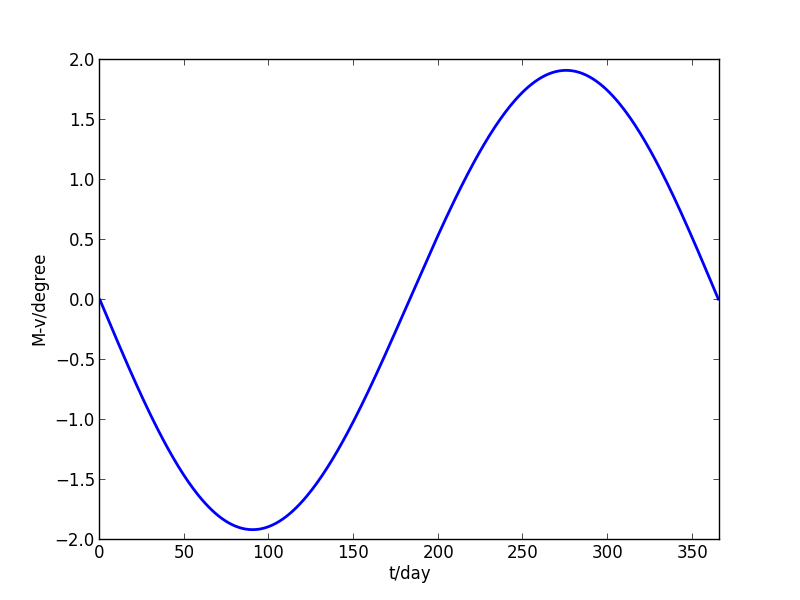
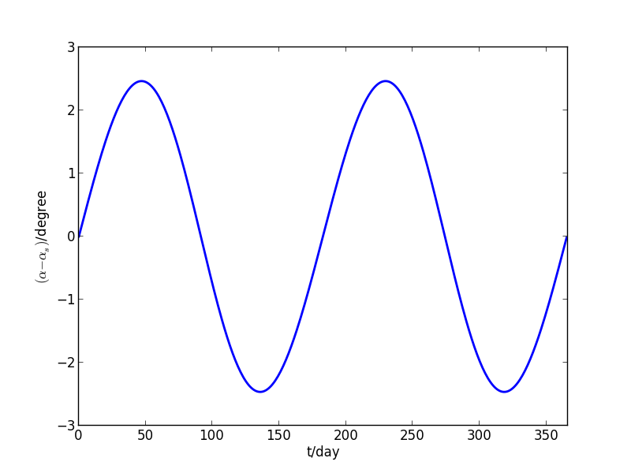
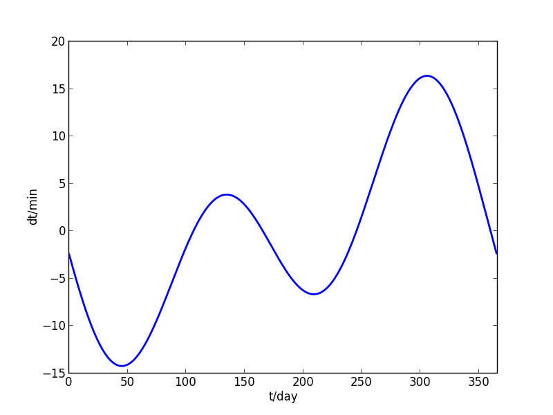

真太阳时和平太阳时
- A：时间是如何定义的？
- B: 好像是什么 原子钟吧？
- A: 原子钟只是用最准确的方式确定1s的时间。最初的时间定义是从哪里来的？
- B: 秒，分钟，小时，天，是一天吧？
- A: 对头，最初的时间单位肯定是天。因为对地球人来说，最容易观察到的“变化”，就是太阳的升起、落下，周而复始。而人的活动也都根据这一周期进行安排。自然就有了“天”这一时间单位。
- B: 那下面就该小时了吧。
- A: 应该还不是。原始的人类还不需要太精确的时间概念。除了天，对人类活动影响最大的周期是“年”。由于地球的公转引起的气候、季节的周期性变化导致了一个较长的时间单位——年。
- B: 那下面就该是“月”了吧。“月”是人类看到月亮的阴晴圆缺的周期而定义的吧。
- A: 没错。人类的最原始的时间单位都来自于对地球来说最为显著的两个天体：太阳和月亮。
- B: 那其他的的时间单位也都是从这三个“原始”的时间单位衍生出来的吧。
- A: 随着人类的进步，需要更精确的时间，“天”太长了，于是就把一天分为若干份。中国人分12份，一份是一个时辰。西方人分24份，一份是一个小时。对某些活动，小时还是太长，于是再分，就有了“分钟”，“秒”。现在连“微秒”、“纳秒”、“皮秒”、“飞秒”等等更小的时间单位都很常用了。
- B: 是啊，有了科学计数法，都不用费脑子去给时间单位取名字了。
- A: 实际上随着科学的进步，不仅定义了更多的时间单位，反过来还对最原始的时间单位进行更精确的修订呢。你知道“真太阳时”和“平太阳时”吗？
- B: 啊，不知道啊。
真太阳时是用真太阳日确定的，真太阳日，也有称作视太阳日的，是指太阳连续两次经过上中天（可认为是太阳高度最高的时刻）的时间间隔。但是真太阳日不是恒定不变的，在一年当中一直在连续的变化。
由于真太阳日不恒定，无法用它来定义基本的时间长度。为此人们假想了一个理想的，绕地球匀速转动的“平太阳”，平太阳连续两次经过上中天的时间间隔是不变的，定义为24小时，这就是“平太阳日”。
有了平太阳日，就可以定义出更小的时间单位，小时、分钟、秒，等等，这一时间体系，都是平太阳时。我们日常生活中使用的时钟，都是指平太阳时，而且根据不同的地区，做了时区的修订。但是采用平太阳时，无法确定真实的太阳高度，比如中午12点时太阳不一定是最高的。
- A: “日出而作，日落而息”是采用的什么时间？
- B: 真太阳时
- A: “朝九晚五”的作息制度又采用的什么时间？
- B: 平太阳时
真太阳时和平太阳时的区别对我们的日常生活有影响吗？一般来说是注意不到的。因为二者在一年中的最大差别还不到20分钟，我们又不会真正在意每天太阳最高的时刻是否与昨天相同。但是如果用心的话，还是能够观察到这个时差的。比如，天安门的升旗和降旗时间是根据当地的日出、日落时间确定的。这个时刻是能够查到的，日出和日落时刻的中间值就是真太阳日的中午12点，观察一下，中间值是一直在变化的。这就是由于真太阳时和平太阳时的时差导致的。
那么，平太阳时和真太阳时的时差是什么原因造成的呢？主要是两个原因：地球轨道的偏心率和黄赤交角。
先说偏心率的因素。地球公转轨道不是圆，而是椭圆（当然也不是完美的椭圆），太阳是椭圆的一个焦点，椭圆的偏心率为0.016。根据 开普勒定律，在近日点速度快，远日点的速度慢，相应的在地球上看太阳的运行速度也同样变化。而在地球上太阳的视运动周期（即真太阳日）是由地球自转和绕太阳的公转共同作用的，地球的自转速度不变，那么绕太阳的速度变化就导致了真太阳日的变化。
如何量化偏心率的影响呢？可以通过求解 Kepler 方程来得到。Kepler 方程如下： \begin{equation} E - e\sin E=M \end{equation} 式中 e 是椭圆偏心率， M 是平近点角，就是平太阳日转过的角度， E 是偏近点角，是一个辅助角度。由 E 可得到真近点角 v ，真近点角就是真太阳转过的角度。二者的关系如下： \begin{equation} v = 2 \arctan\left( \sqrt{\frac{1+e}{1-e}}\tan\frac{E}{2} \right) \end{equation} M 和 v 的差值反映的就是平太阳时和真太阳时的时差。用下面的程序求解：
import matplotlib.pyplot as plt
from math import sin, cos, tan, atan, pi
import numpy as np
year = 365.2422
day = np.array(range(366))
Md = day/year*2*pi
e = 0.0167
def solveKepler(M, ec):
epsl=1.0e-8
n=int(M/2/pi)
M-=2*pi*n
E=M
err=1.0
while abs(err)>epsl:
f=E-ec*sin(E)-M
df=1-ec*cos(E)
err=f/df
E-=err
return E+2*n*pi
E=[solveKepler(m,e) for m in Md]
v=[2*atan(((1+e)/(1-e))**0.5*tan(EE/2)) for EE in E]
for i in xrange(366):
if v[i] < 0:
v[i] += 2*pi
Mv=[(Md[i]-v[i])*180/pi for i in xrange(366)]
plt.plot(day,Mv,linewidth=2)
plt.xlabel('t/day')
plt.ylabel('M-v/degree')
plt.axis([0,366,-2,2])
plt.savefig('img/solar_time_M_v_day.png')
M 和 v 的差值见下图，注意并没有转换为时差，是角度差。

偏心率造成的平太阳时与真太阳时之差
另外一个因素是黄赤交角，即地球公转轨道面和地球赤道面的夹角。前面说过，太阳日是由地球自转和公转两个因素决定的。在二分点, 太阳倾斜着经过赤道, 其赤经的增加速度显然慢, 而在二至点, 太阳的运行 方向与赤道平行, 因此赤经的增加速度显然最快. 这也就导致了时差。该时差的计算在前文（SolarApparentMotion ）已给出，其中太阳黄经和太阳赤经的差值在一年中的变化为：

太阳黄经和赤经差值在一年中的变化
以上两个因素相结合，就得到了平太阳时和真太阳时的时差的变化规律。不过要注意的是，前两条曲线的起始点不同，地球轨道偏心率影响的曲线是从近日点开始的（大约在1月4日），而后一条曲线是从春分点开始的（大约是3月22日）。这两条曲线经过起始点修正后叠加就得到了平、真太阳时时差的变化规律。该时差可通过一个近似公式得到：
\begin{equation}
\Delta t=0.0028-1.9857\sin\theta +9.9059\sin 2\theta-7.0924\cos\theta-0.6882\cos 2\theta
\end{equation}
θ 是日角, 即按照平太阳时计算的地球公转过的角度：
\begin{equation}
\theta = \frac{day - N0}{365.2422}
\end{equation}
day 是从1月1日起的天数， N0 是对天数的修正 N0 = 79.6764 + 0.2422 * (year - 1985) - int((year - 1985)/4) , year 是年份。
import matplotlib.pyplot as plt
from math import sin, cos, tan, atan, pi
import numpy as np
year = 365.2422
day = np.array(range(366))
N0 = 79.6764 + 0.2422 * (2012 - 1985) - int((2012 - 1985)/4)
theta = (day-N0)/year*2*pi
dt = [0.0028-1.9857*sin(th) +9.9059*sin(2*th)-7.0924*cos(th)-0.6882*cos(2*th) for th in theta]
plt.plot(day,dt,linewidth=2)
plt.xlabel('t/day')
plt.ylabel('dt/min')
plt.axis([0,366,-15,20])
plt.savefig('img/solar_time_dt_day.png')
下图是 2012年时差的变化，大致上就是前面两个曲线的叠加。

2012年平太阳时和真太阳时的时差变化
可以看出，一年当中平太阳时比真太阳时在每年11月3日约慢16分，到2月12日时又约快14分，中间的 日子快慢不等。这一里一外差距有半个小时。全年4月16日、6月14日、9月1日及 12月25日这四天（闰年会有些许调节），真太阳时与平太阳时重合。